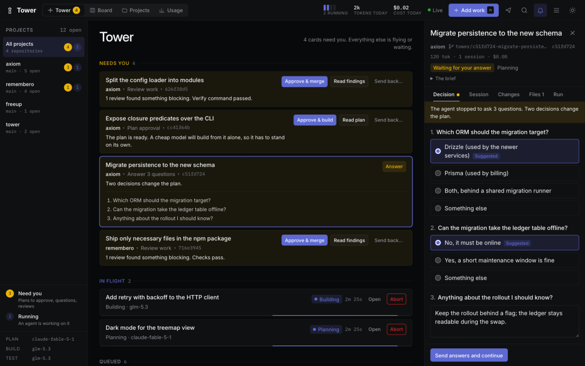
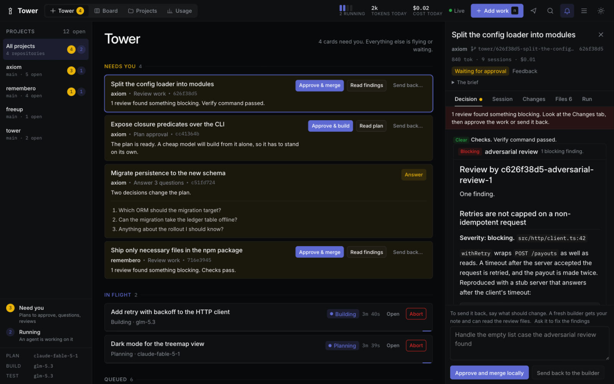
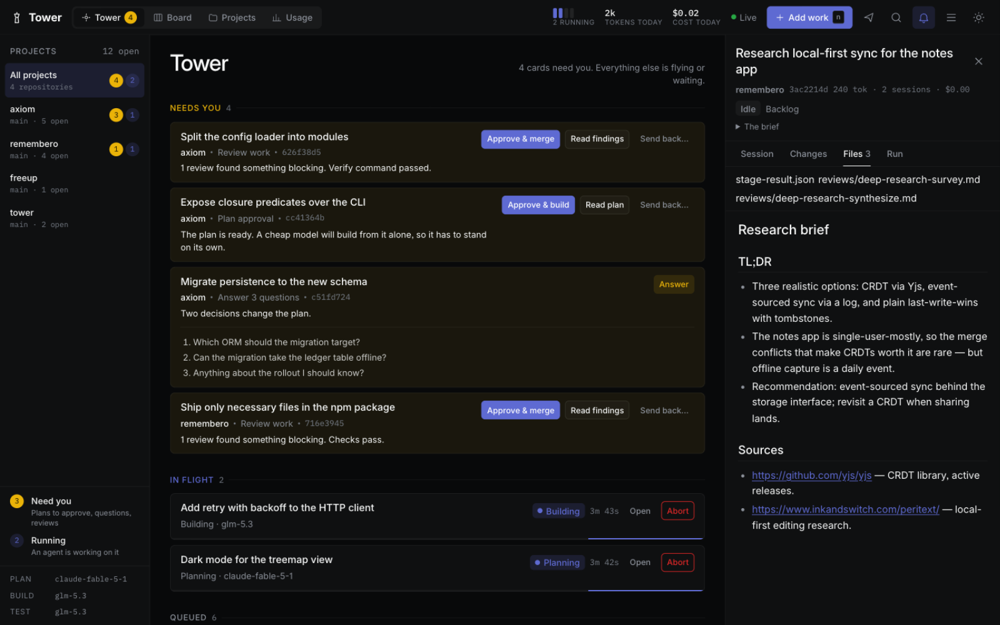
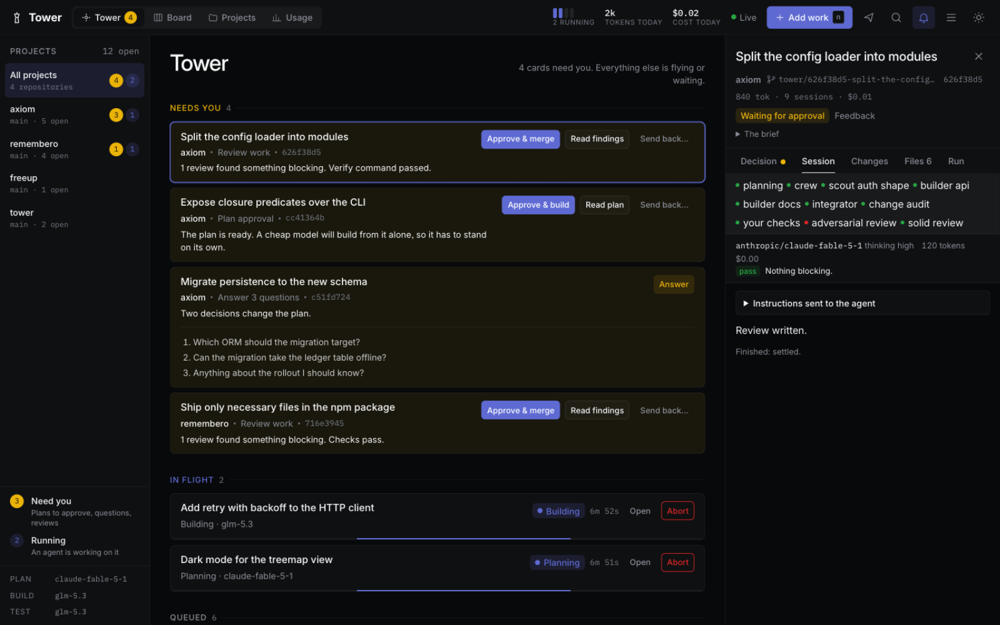
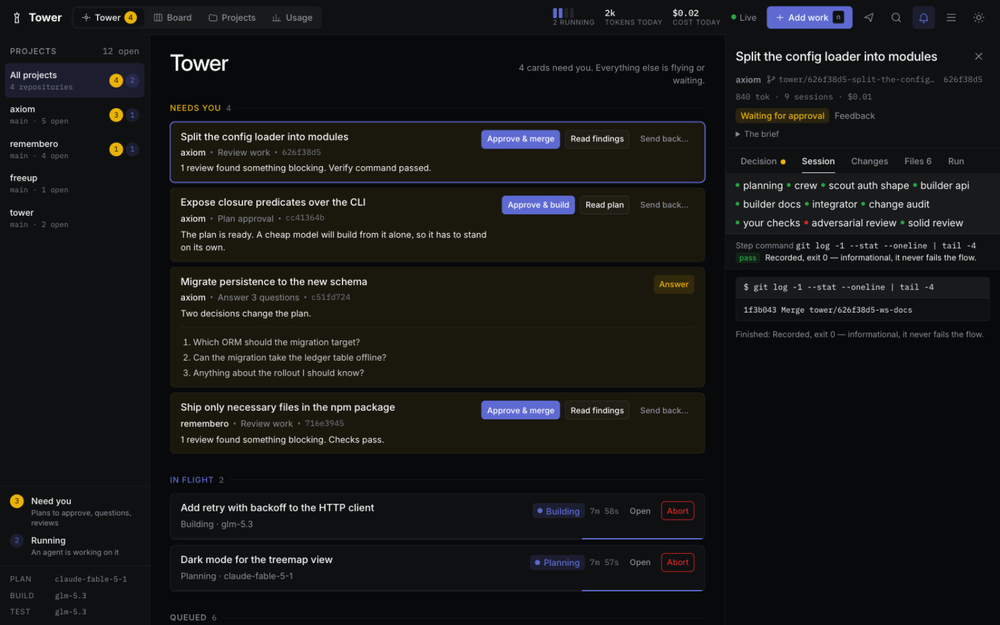
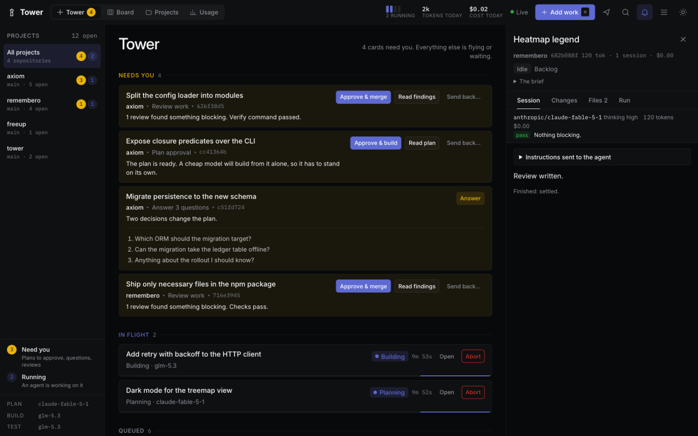
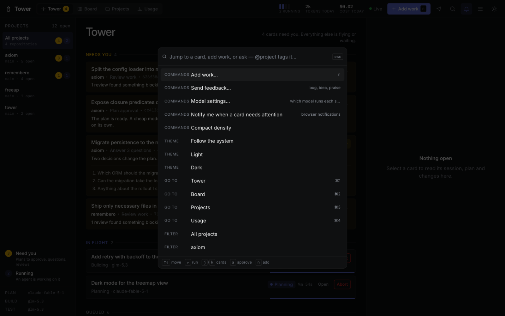
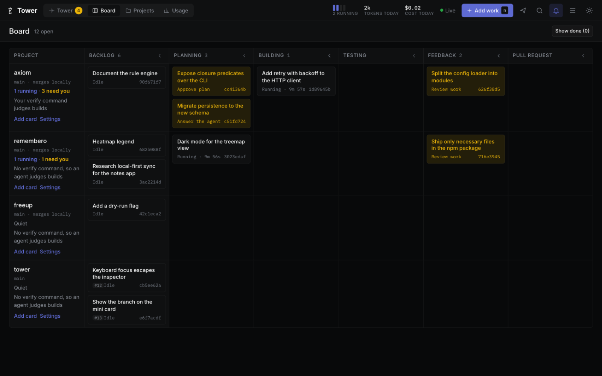
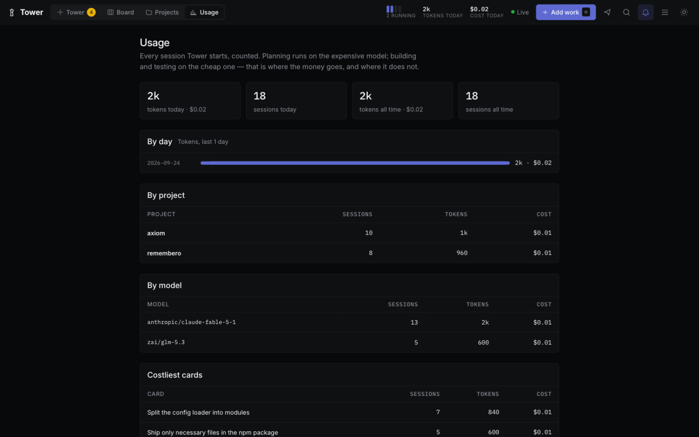

The control tower for coding agents
Stop writing code. Start landing it.
Tower runs pi coding-agent sessions across all your projects from one board — the whole life cycle, question to merged. Research maps the unknowns before a plan exists, a strong model plans, a cheap one builds, gates you write in a sentence decide what is worth testing, and reviewers who never saw the work try to break it. The agents fly; you work the tower: every decision that is yours lands on one amber row, one click each.
pi install git:github.com/rahult/tower
Then type /tower in any pi session. The board opens at 127.0.0.1:4700.
- No cloud
- No telemetry
- Your machine, your keys
- Open source
Needs you these decisions block an agent
In flight agents at work; step in only if you must
Landed today
- Needs you
- An agent is working
- Landed

Retired
The toolchain it replaces
The software life cycle used to be a dozen tabs: a tracker for the work, a board for the status, a queue for the tests, a rota for review, a dashboard for CI. Tower collapses that pipeline — the agents do the stages, the board does the chasing, and your test suite stays the judge.
- Ticket tracker and sprint board
- The queue. Cards carry a brief, a branch and a budget; global and per-project caps decide what runs.
- Planning meetings
- A planner that models the work before writing a step — domains, actors, invariants — and asks you the questions only you can answer.
- Branch handoffs
- A git worktree per card. Two cards build in one project at once; your checkout is never touched.
- The test cycle
- Your verify command judges every build. A failure goes back to a builder with the output; three strikes stops for you.
- The review rota
- An adversarial review and a SOLID design review in fresh sessions with no edit access. Findings wait for you beside the diff.
- CI you write in a sentence
- Flows compose agents and shell gates — a lint command, a size check, a reviewer role — and attach them to the plan, the build or the tests. A failed gate sends its own output back to the builder; no model decides whether your checks passed.
- The spike, before the plan
- A deep-research flow maps an unfamiliar question with sources fetched over the network and writes a cited brief — options, trade-offs, what it means for this repository. It runs on a backlog card, and the planner reads the brief.
- Watching CI
- Tower watches the pull request it opened. Failing CI goes back to a builder on its own; a merge settles the card.
- The standup
- The stream is the status: Needs you, In flight, Queued, Landed today — with tokens and cost counted in the strip above.


Flight plan
How a card moves
Tell Tower what you want done. From there the card drives itself through seven stages and stops twice, both times for you.
-
Unknown ground gets researched first
Not every card starts with a task; some start with a question. An exploring line in the command box — research local-first sync @notes — files the card and runs the deep-research flow on it, right where it rests in the backlog: a survey fetches evidence over the network (docs, repositories, package registries), and a synthesizer writes a cited brief — options with trade-offs, a recommendation, what it means for this codebase. Nothing starts until you say so.
-
A strong model plans
The planner explores your repository and writes
plan.md. A research brief on the card is read first — its recommendation is context, not command. Before it writes a step it models the work — the domains it touches, the actors, the properties that must hold — and leaves those invariants in the plan as test targets. It changes nothing. Planning defaults toanthropic/claude-fable-5-1, because a wrong plan is the costliest mistake a cheap builder can inherit. -
You approve, in one click
The card turns amber in Needs you. Read the plan; approve it, or send it back with a note. If the planner hit a decision that is yours, it asks first — with suggested answers you can click.
-
A cheap model builds from the plan alone
Building is a fresh pi session that sees the plan and nothing of the planner's conversation. It works in the card's own git worktree and commits on the card's branch. Building defaults to
zai/glm-5.3. When the plan splits cleanly — and only then — the planner says so, and a crew takes over: scouts answer open questions in parallel, each stream is built by its own agent in its own worktree, and an integrator merges the branches before your tests run. -
Gates and tests decide, not opinions
Before testing runs, the gates you declared run: flows attach shell commands to the plan, the build or the tests —
pnpm lint, a size budget, a security skill — mixed freely with agent steps. A gate that fails stops the card with its own output, and a retry hands that output to a fresh builder; no model decides whether your checks passed. Then Tower runs the project's verify command, for examplepnpm test && pnpm typecheck, and reads its exit code. A failure goes to a fresh builder together with the output. After three builds the loop stops and the card asks for you. -
Reviewers who never saw the work
Review flows run in fresh sessions with no edit access: an adversarial review that tries to break the change, and a SOLID design review. On demand, any resting card can also run an invariant simulation — the plan's model, reasoned through scenarios before your tests catch what it missed.
-
You approve; it lands
Approve from the row. With an origin remote, Tower opens the pull request with
ghand watches it: failing CI goes back to a builder, a merge finishes the card. Without one, Tower merges the card's branch into your default branch itself — after checking your checkout is clean — and the card settles, quietly, into Landed today.



Systems
What it takes care of
- Attention, not alarms
- Everything that needs you gathers in one amber group, ordered by what blocks an agent. Answer in place, or open the card for the whole story. Away from the tab? One bell per card, a badge in the title, and the favicon wears the count.
- Keyboard-first
j/kwalk the cards,aapproves the open one,/or⌘Kopens the command box,nadds work,⌘1–4switch views. The ordinary path never needs the mouse; the footer keeps the keys written down.- No remote? It still lands
- A repository without an origin never sees a pull request: approved work merges straight into the default branch, guarded against a dirty checkout, and the card settles as merged locally.
- Parallel, when the plan allows it
- A plan that splits into independent streams is built by a crew of sub-agents: scouts research the open questions first, each stream gets its own agent and worktree, and an integrator merges the branches so testing still judges one change. Most plans shouldn't split; the planner decides, per project toggle.
- Flows, not plugins
- Your agents are JSON files in
~/.tower/flows/: a step can be a prompt file, a pi skill, one of your agent roles — or a shell command whose exit code is the verdict. Declarewhen— manual, after the plan, after the build, after tests — and the lifecycle runs them there. - A fresh session per stage
- Stages hand off through files such as
plan.md, never through a shared conversation. The builder starts with a clean context, and a reviewer never inherits the author's reasoning. - Questions, not guesses
- An agent that hits a decision that is yours stops and asks, with options you answer by clicking. Its session continues with your answers, so nothing it learned is thrown away.
- Modeled before it is built
- Planning derives the domains, the actors and the invariants — what must hold when the work is done. Testing answers each invariant with a verdict, and a full simulation runs on demand from any resting card's Run tab. Off per project, if you prefer.
- Where the tokens go
- The strip counts running pips, tokens and cost today, live. Usage breaks every run out by day, project, model and card — failed runs keep their spend.
- A queue that survives restarts
- Global and per-project caps decide how much runs at once. The queue is stored; sessions cut off by a restart resume where they stopped.
- Locked-down sessions
- pi has no tool-approval step, so stages start with
--no-extensionsand without project trust. Both are opt-in per project.



Pre-flight
Install
You need pi, git, npm and Node 22.18 or newer.
pi install git:github.com/rahult/tower
Start pi from a shell that has your provider API keys, then type /tower. The first run builds the board, starts Tower in the background and opens it at
127.0.0.1:4700. Tower keeps running after you quit pi.
/tower |
Start Tower if needed and open the board |
|---|---|
/tower add <title> |
Add a card for the repository you are in. It becomes a project the first time |
/tower run <title> |
Add a card and start planning it |
/tower status |
What is running, and what is waiting for you |
/tower settings |
Show or change which model runs each stage |
/tower rebuild-ui |
Rebuild the board after pulling updates — no daemon restart needed |
/tower stop |
Stop Tower. Running sessions can be resumed next time |
pi packages run with full access to your machine, and Tower runs agents that execute shell commands in your repositories. Read the source before you install it.
Yours to change
The opinions are yours to change
Four small functions hold Tower's judgement calls. Each ships with a deliberately plain default and a comment that lays out the trade-off. The concurrency caps are enforced outside them, so a policy can only choose among cards that are allowed to start.
// packages/core/src/policy/scheduler.ts
// Keep every lane moving, or finish what is started?
export function pickNext(candidates, state) {
const [first] = [...candidates].sort((a, b) => a.queuedAt - b.queuedAt);
return first?.cardId ?? null;
}requiredGates- When may a small plan skip your approval?
decideAfterFailure- Stop early when the same error repeats? How much output does the builder get?
pickNext- Which waiting card gets the next free slot?
pickModel- Move to a stronger model after a failed build?
Logbook
Where it stands
Tower is early, and complete from backlog to merged: planning, the plan gate, building — single-session or a parallel sub-agent crew — testing with the retry loop, invariant simulation, review flows and your own deterministic gates, the feedback gate, and finishing both ways: pull requests with CI repair, or a local merge when there is no remote. Deep research runs before any of it, on the backlog card itself. Scheduling, restart recovery, questions, model settings and on-demand runs are in. Tests run the whole daemon end to end, and planning, building, testing and questions have been run against real pi sessions.
Not yet proven against the real thing: the pull request stage has only met a stand-in for GitHub. Expect rough edges there, and say so when you find one. The design is in the repository.